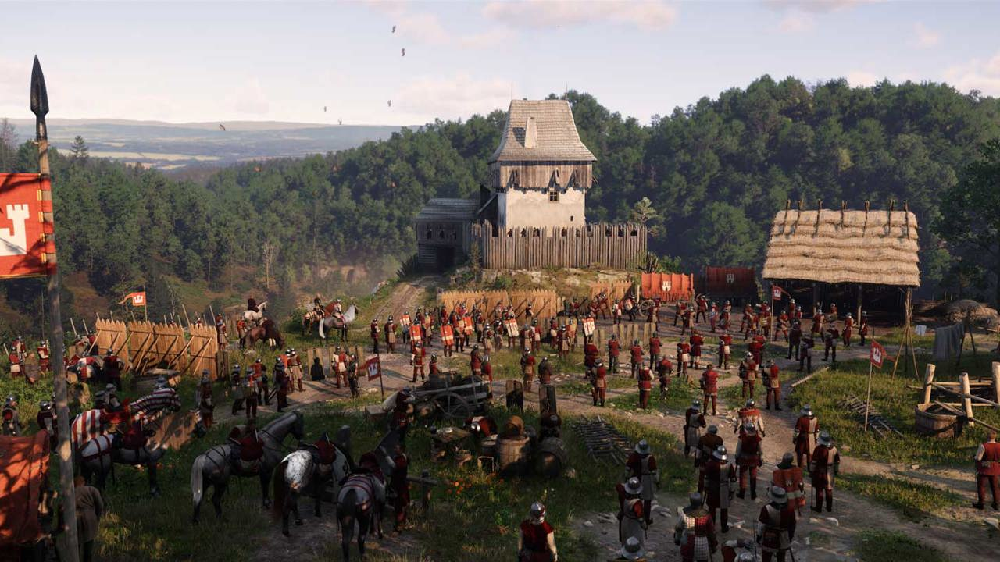

Markvart von Aulitz ~ 10 June 2026
This is how a small studio did what many players and corporations believed to be impossible--creating an RPG that defied modern gaming standards and ignored common trends to deliver a game that is truly extraordinary. In today’s RPG industry, major AAA developers create games that follow trends to the extreme; as though they were all following a script. Kingdom Come: Deliverance 2, however, breaks these conventions entirely. Warhorse Studios, the creators behind KCD2, proved that an immersive, highly realistic, and unconventional RPG was not only possible, but restores the original essence of the genre. This is the story of how one small studio reignited the flame of the genre whilst stomping the industry that had long abandoned this flame in doing so.
The Problem With Modern AAA RPGs
The problem with modern AAA RPGs lies in the conventions they follow to the extreme and the apparent lack of passion and effort behind the development. This causes each new RPG to feel almost lifeless and lacking innovation as nothing is new. These aforementioned conventions include bloated and cluttered UI that sacrifices immersion for convenience, copy-and-paste magic systems, skill trees that compromise immersion, cliched voice lines, and extremely basic surface-level story elements, for instance. What was once a genre with an abundance of creativity, immersion, realism, and passion, was reduced down to a stale, uninteresting genre to meet industry standards.
What KCD2 Does Differently
In contrast, Kingdom Come: Deliverance 2--a game created by a small, AA studio--ignored all of the aforementioned conventions and became a game abundant in passion, innovation, realism, and exceptionally in immersion. KCD2 resolves each of these shortcomings by providing a simplistic UI that only solely includes the basics, a deeply rooted story based on history, and an experience that values immersion over convenience. The mechanics of KCD2 are not only extremely immersive, but historically accurate. This creates an extremely punishing game that evokes the feeling of living in the medieval era; an experience that modern AAA games cannot fathom or produce. Furthermore, in addition to the aforementioned aspects, there exists an option in the game that allows the player to completely eradicate all features made for convenience for the ultimate immersive experience. In essence, Kingdom Come: Deliverance 2 is the epitome of an immersive RPG experience--one that the modern AAA industry has failed to produce for years.

In the modern era for RPGs, filled with lifeless games that follow safe conventions, there exists Kingdom Come: Deliverance 2; a game that not only breaks these conventions, but brings back what the RPG genre was supposed to be. Modern AAA RPGs often follow conventions to an extreme, leading to a game that feels lifeless, copy-and-paste, and even devoid of passion and innovation. KCD2 resolves each of these aforementioned shortcomings by taking a risk--mechanics that are so realistic that they sacrifice convenience for immersion. This creates an unforgettable, unique experience unseen in any modern game. What Warhorse Studios achieved was not simply creating an extraordinary game, but proving that the modern gaming industry is not creating experiences players have already seen, but to take risks, create, and innovate an experience truly unique.